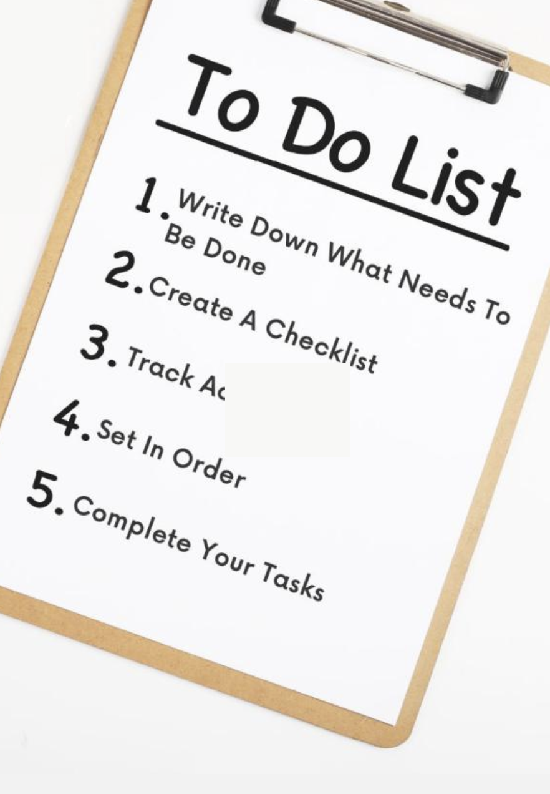
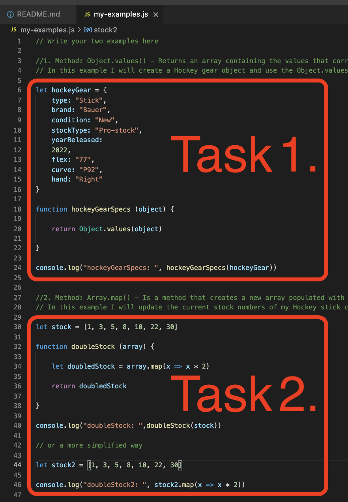
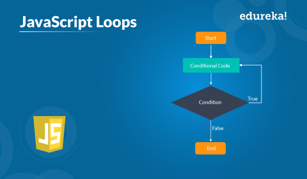

An analogy to describe the difference between HTML and CSS
If we use the analogy of a webpage being a car, HTML would be all of the cars components that build it from scratch. In its raw form the car would function and work as designed by the Engineers, allowing it to drive, reverse, brake etc. Now, the next stage in the car manufacturing process is to make the car look nice! This is would be the CSS of the car, here we add style like paint colour, wheel type & size, body kit, spoiler, exhaust modification, decals, tints (different shades), interior design & fabrics, neon lights etc……. You can add or modify the CSS to your liking depending on how you want the car to look, or in our case the webpage. You may not want all the bells & whistles when styling your car/page and may prefer a design that is simple/clean, or you may be a bit more expressive and want to have colours and mods that are loud. It is all up to you, and with CSS you can do that!
Lets learn about Control Flow and Looping!
Welcome to my week 3 JavaScript tech blog! In this blog I will attempt to explain what Control flow and looping is and give an example of how they could be viewed in a normal day to day setting. Sit back and enjoy! I hope this will help you on your journey to becoming a JavaScript Guru.
So what is Control Flow? And what is Looping?
Control flow is the order of which the computer executes statements in a script. Code is run in order from the first line at the top of a script to the last line, unless the computer comes across structures that change the control flow, ie conditionals (which may skip code) or loops (which may loop a particular code over and over again until completed).
A Loop is a sequence of instructions that is continually repeated until a certain condition is met in computer programming.
Ok, does that make sense? Great!
What would that look like in a day to day activity?
The best example I can think of when it comes to Control flow and Loops would be like describing one of my typical study days with EDA. Each day I have a start and an end which I usually plan out in the mornings. The planning stage in this process would be the equivalent to writing my code or script in a file, ie: Listing the tasks I want to implement for the day and organising them in order from first to last, in the coding world this would be you writing your code or functions from top to bottom.
 Now once your plan is written (or your code) you will then execute the plan from the first task to the last. This process is what we call Control Flow! It’s that simple! The process of executing code from top to bottom is control flow, that is it. Your code will be executed by a computer, it will start at the beginning of the document and run what ever code is at the top, making its way down to the last piece of code the same way you work through your ‘To do list’. And that is what we call control flow!
What about Loops?
As we defined earlier, a loop is a sequence of instructions that is continually repeated until a certain condition is met. This means, when the control flow process occurs and it meets a loop function, its natural linear form (movement from top to bottom) is broken and a will repeat a set of code over and over before moving to the next task. This happens a lot in coding and is good to be aware of as it affects the control flow. The same goes for a typical to do list when planning your day, there might be tasks that you repeat (until a particular condition is met) before moving on to the next step. This repetition of a task is what we call looping! It is one of the only times the control flow is manipulated in order to achieve a desired outcome. See the JavaScript chart below to see how the loops affect the control process:
Going back to my planning analogy, during week two we had to create and add blog pages to our website. In this process I had to repeat the same building and deployment tasks multiple times before moving on to the next task of the day. This process was broken down as follows:
- Write the blog Material
- Create a new html page using my current blog template
- Add the material to the page including images
- Format the styles
- Link the page to your index.html
- Save and deploy to the GitHub repository.
The above list of steps would be classed as the ‘Conditional Code’ inside the the Control flow diagram above. It will be continually repeated as long as the ‘Conditions’ are met. In this case the conditional code would be loosely translated as, Run the conditional code as long as there is a blog to create and deploy, and End the process if there are no more blogs to complete. I created 3 blogs last week, so executed the Loop 3 times. Hope that makes sense, and that is Looping!
Thank you for reading my blog, I hope this helped you to understand better the concepts of Control Flow and Looping. Have a great day!